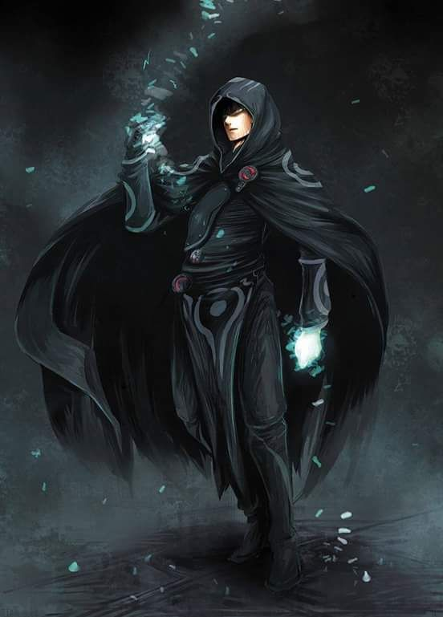

Com olhos brilhando dourado, uma
humana estica suas mãos e libera o fogo
dracônico que queima em suas veias. A
medida que um inferno consome seus
oponentes, asas de couro surgem nas suas
costas e ela ergue-se no ar. Os longos cabelos balançam com a conjuração
do vento, um meio elfo abre seus braços totalmente
e joga a cabeça para trás. Erguendo-o
momentaneamente do chão, uma onda de magia
surge sobre ele, por meio dele e, fora dele, uma
poderosa explosão de relâmpago.
Esgueirando-se atrás de uma estalagmite,
uma halfling aponta seu dedo em um troglodita em investida.
Uma explosão de chamas é liberada através do seu dedo e atinge a criatura.
Ela toma cobertura atrás da formação rochosa com um sorriso,
sem saber que sua magia selvagem deixou sua pele com um brilho azulado.
Os feiticeiros carregam um patrimônio mágico conferido a
eles por uma linhagem exótica, alguma influência de outro mundo ou exposição
a forças cósmicas desconhecidas. Não é possível estudar feitiçaria como se
aprende um idioma, assim como não se aprende a viver uma vida lendária.
Ninguém escolhe a feitiçaria: os poderes escolhem o feiticeiro.
MAGIA BRUTA
A magia é parte de todo feiticeiro, inundando corpo, mente e espirito com um poder latente que espera para ser dominado.
Alguns feiticeiro carregam magia que emerge de uma antiga linhagem infundida com a magia dos dragões. Outros carregam uma magia bruta,
incontrolável dentro de si, uma tormenta caótica que se manifesta de formas inexplicáveis. A aparência dos poderes de feitiçaria
são vastamente imprevisíveis. Algumas linhagens dracônicas produzem apenas um feiticeiro por geração, porém, em outras linhas de descendência,
todos os indivíduos serão feiticeiros. A maior parte do tempo, os talentos de feitiçaria aparecem aparentemente ao acaso.
Alguns feiticeiros não conseguem determinar a origem do seu poder, enquanto outros o relacionam com estranhos eventos de suas vidas.
O toque de um corruptor, a bênção de uma dríade no nascimento de um bebê ou experimentar a água de uma fonte misteriosa podem conceder
o dom da feitiçaria. Também é possível adquirir esse dom de uma divindade da magia, da exposição as forças elementais dos Planos Interiores
ou do caos alucinante do Limbo ou ao vislumbrar o funcionamento interno da realidade. Os feiticeiros não veem serventia em grimórios ou antigos
tomos de conhecimento místico buscados pelos magos, nem buscam um patrono para conceder-lhes suas magias, como um bruxo faz. Ao aprender a
explorar e canalizar sua própria magia inata, eles descobrem novas e incríveis formas de liberar esse poder.
PODERES INEXPLICÁVEIS
Os feiticeiros são raros no mundo e é incomum encontrar um feiticeiro que não esteja envolvido na vida de aventuras
de alguma forma. Pessoas com poder mágico fluindo em suas veias descobrem cedo que o poder não gosta de ficar quieto.
A magia de um feiticeiro gosta de ser exercida e tem uma tendência de fluir de maneiras imprevisíveis se não for chamada.
Muitas vezes, os feiticeiros tem motivações obscuras ou quixotescas que os leva a aventuras.
Alguns buscam uma maior compreensão da força mágica que os infunde ou a resposta do mistério de sua origem.
Outros, esperam encontrar uma forma de se livrar dele ou de liberar seu potencial máximo. Independente dos seus
objetivos, os feiticeiros são tão uteis para um grupo de aventureiros quanto os magos, compensando a falta de variedade
de conhecimento mágico com uma enorme flexibilidade no uso das magias que eles conhecem.
CRIANDO UM FEITICEIRO
A pergunta mais importante a se considerar quando estiver criando seu feiticeiro é a origem do seu poder.
Quando começar o seu personagem, você irá escolher uma origem que o vincula a uma linhagem dracônica ou a
influência da magia selvagem, mas a fonte exata do seu poder cabe a você decidir. É uma maldição de família,
passada a você de um ancestral distante? Ou algum evento extraordinário não apenas abençoou você com magia inerente
mas também deixou uma cicatriz? Como você se sente em relação ao poder mágico que corre através de você? Você o abraçou,
tentando dominá-lo ou deleita-se com sua natureza imprevisível? Ele é uma bênção ou uma maldição?
Você o buscava ou foi ele que te encontrou? Você teve a opção de recusá-lo ou você queria ter tido? O que você pretende fazer com ele?
Talvez você creia que esse poder lhe foi dado para algum propósito maior. Ou você pode decidir que esse poder lhe dá o
direito de fazer o que quiser, de tomar o que você quer daqueles que não possuem tal poder. Talvez seu poder
ligue você a um poderoso individuo no mundo – a criatura feérica que abençoou você no nascimento, o dragão que colocou uma gota de
seu sangue em suas veias, o lich que criou você através de um experimento ou a divindade que escolheu você para carregar seu poder.
Fonte: Vertente Geek